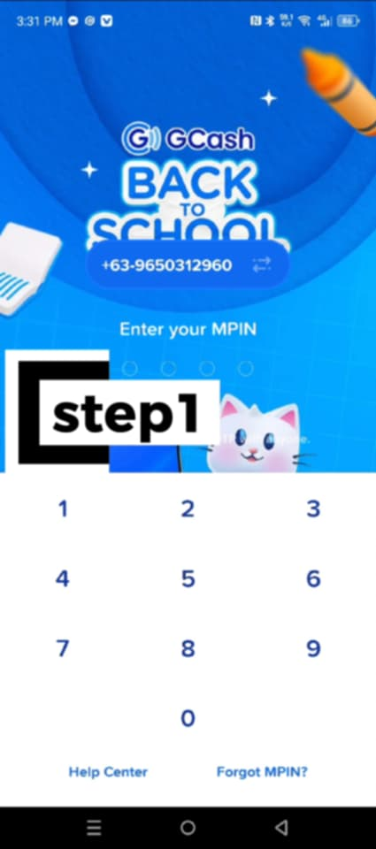
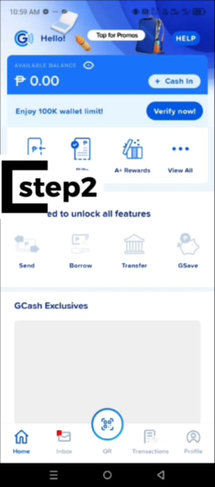

What do you want to do next?
"Anu it imo karuyag buhaton sunod?"
Try "Testingan" Information about app
"Impormasyon hit applikasyon" Return
"Balik"

What is GCash?
"Anu ba itun Gcash?"
GCash is a popular mobile wallet and digital payment service in the Philippines. It lets users do many
financial activities easily from their smartphones, such as:
Sending and receiving money instantly
Paying bills like electricity, water, and internet
Buying prepaid load for mobile phones
Shopping online or paying in stores using QR codes
Saving money through GSave or investing with GInvest
Accessing loans and insurance products
An GCash usa nga kilala nga mobile wallet ngan digital payment service ha Pilipinas. Nagtutugot ini ha
mga tawo nga magbuhat hin damo nga financial nga buruhaton ha ira smartphones hin madali, sugad han:
Pagpadara ngan pagbaton hin kwarta dayon-dayon
Pagbayad hin bills sugad han kuryente, tubig, ngan internet
Pagpalit hin prepaid load para ha mga cellphone
Pagshopping online o pagbayad ha mga tindahan gamit an QR codes
Pagtipig hin kwarta pinaagi han GSave o pag-invest gamit an GInvest?
Pagkuha hin mga loan ngan insurance nga produkto)

GUIDE/STEPSGabay/Hakbang
1.Put your MPIN
Ibutang an imo MPIN

2.This is what you will see when you log in to Maya
Asya ini an imo makikita kon magsulod ka ha
Maya